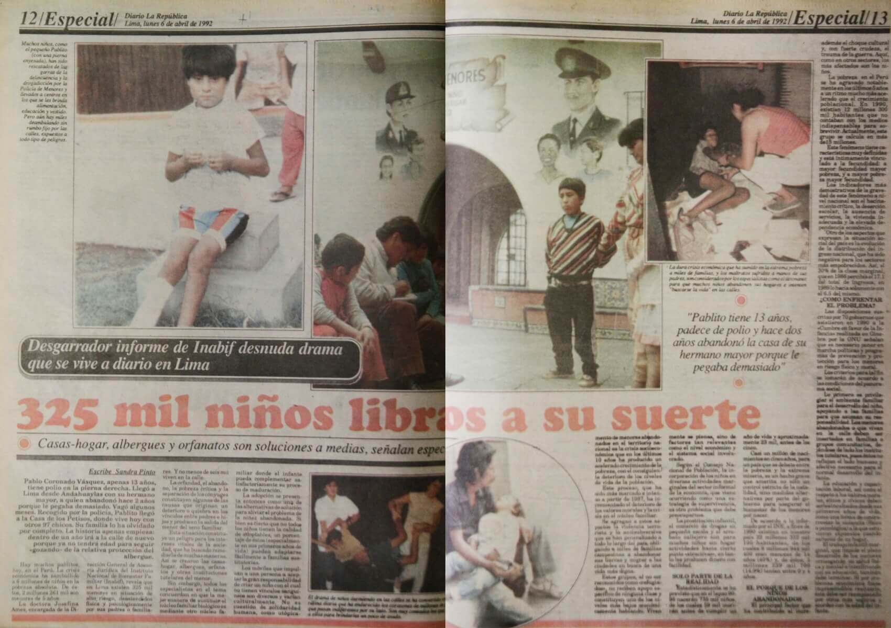

Han pasado 25 años desde el autogolpe de estado en el que Alberto Fujimori y Vladimiro Montesinos dispusieron disolver el Congreso, acabar con la independencia de poderes y censurar a los medios de comunicación.
Después del mensaje televisivo de Alberto Fujimori, efectivos militares ingresaron violentamente a la redacción de La República. Al llegar, señalaron que fueron enviados para evitar que la publicación se “desborde”.
En manera de protesta y debido a la represión de la censura, este diario publicó el 6 de abril de ese año, un número histórico, con varias páginas en blanco. En la primera plana se expuso cada una de las disposiciones de Fujimori, que atentaron contra la democracia.
Óscar Medrano Pérez. Fotógrafo de la revista Caretas desde 1979. El día del autogolpe de Estado acudió a la sede de la revista y fue impedido de ingresar por militares. Se encargó de la cobertura periodística de lo que sucedió en el Congreso de la República aquella vez.
Gustavo Mohme Seminario. Director del diario La República. Encabezó la histórica edición de este medio sobre el autogolpe de Estado que dio Alberto Fujimori el 5 de abril de 1992. Aquí recuerda la presión de los militares contra la prensa en esa fecha.
Cecilia Laca Sánchez. Ocupaba el cargo de directora de la Radio Antena 1 cuando ocurrió el golpe de Estado en el 92. Narra los momentos de tensión que vivieron los periodistas en manos de los militares.
Ana Cecilia Del Castillo. Se desempeñaba como redactora de la República y cubrió las incidencias el día que Fujimori anunció el cierre de las instituciones.
Maritza Montes. En 5 de octubre del 92 era periodista del diario Súper Ídolo. Fue detenida y recluida por la policía junto a Gustavo Gorriti y otra decena de periodistas cuando cumplía con su labor. Hoy Maritza Montes es periodista de La República.
El proyecto de ley de las congresistas Úrsula Letona y Alejandra Aramayo ratifica la tendencia del fujimorismo de mantener bajo amenaza a la prensa libre.
Desde el golpe del cinco de abril de 1992, en que se instaló un régimen dictatorial que censuró y amedrentó a los medios de comunicación independientes, el fujimorismo se definió como enemigo de la libertad de prensa.
Persiguió a los periodistas críticos y de oposición y captó con fondos públicos a los que se dejaron manipular. ¿Qué hace suponer que esta tendencia hostil del fujimorismo hacia la prensa ha cambiado? Nada. Por el contrario, la iniciativa legal de Letona y Aramayo, estimulada por la ex candidata presidencial Keiko Fujimori, renueva la tradición fujimorista de imponer limitaciones al ejercicio periodístico. Para el fujimorismo, la mejor prensa es la prensa amordazada, o la prensa comprada, que es igual.